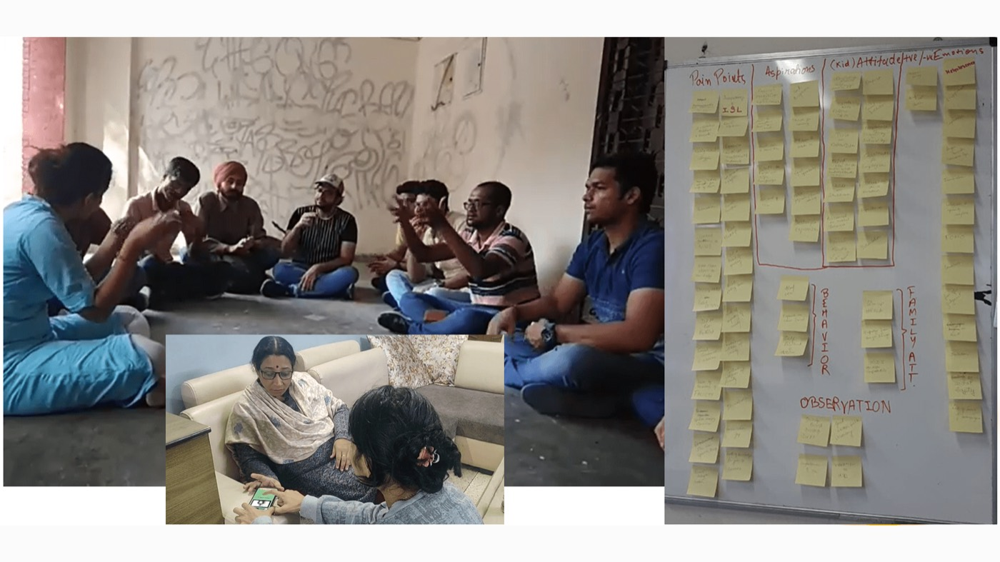
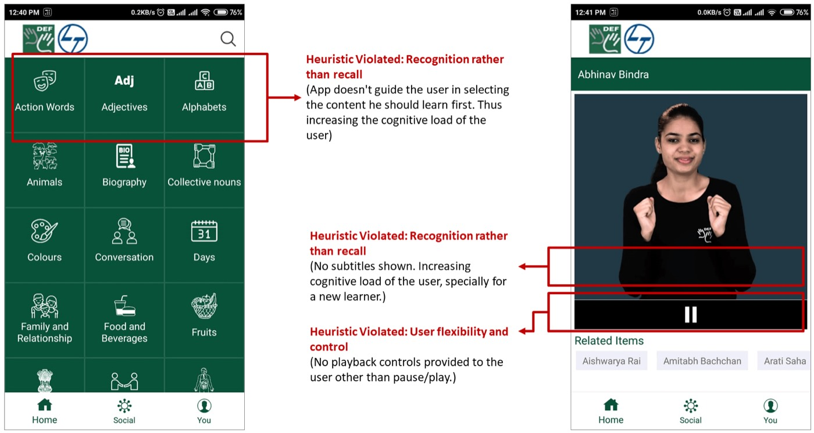
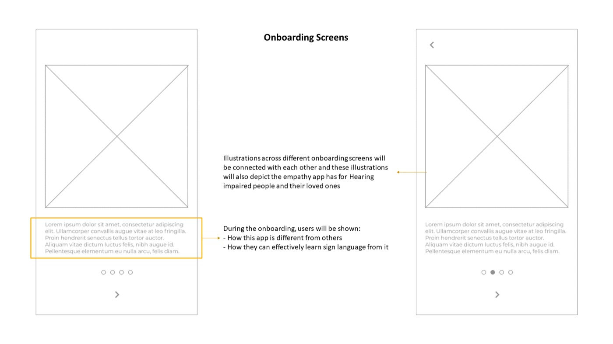
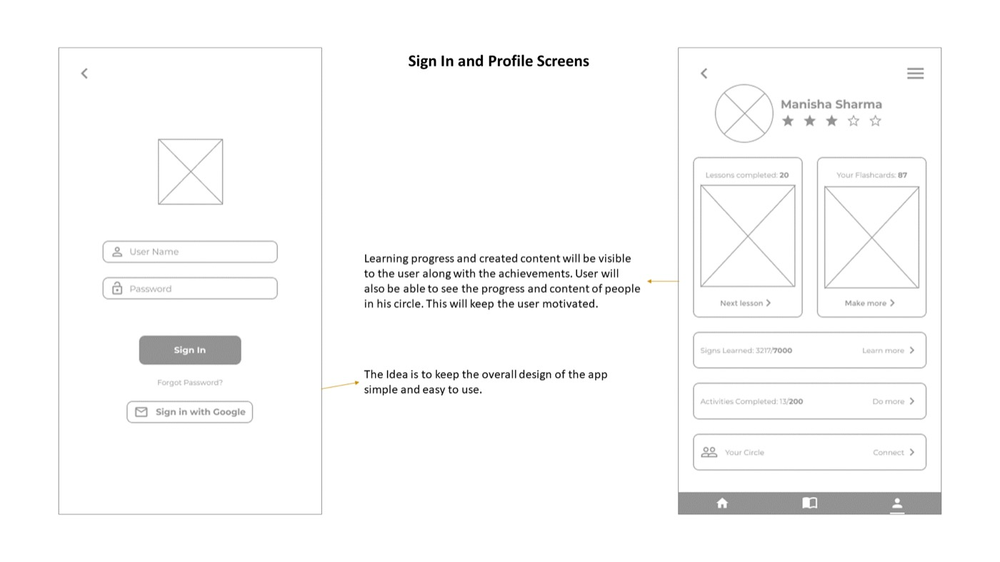
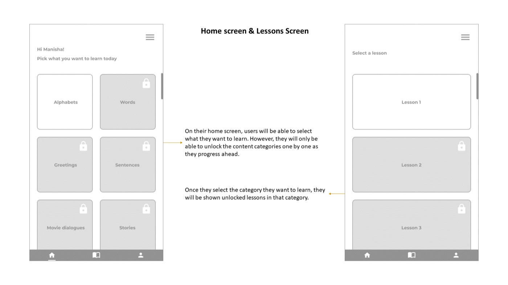
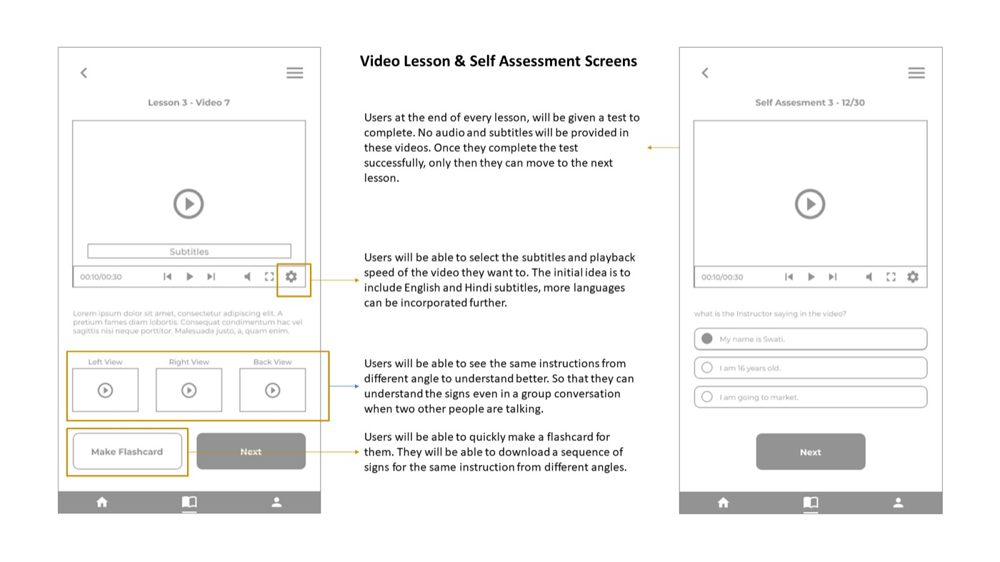

Ni:Shabd
- Approach
- Double diamond
- Primary research
- Focus group of 15 hearing-impaired people, 3 parent interviews, an observation visit
- Product
- Ni:Shabd, an Indian Sign Language app in English and Hindi
A learning app for the family members who are often the only ones who can understand what a hearing-impaired person is trying to say.
The problem

Many resources exist for hearing-impaired people to learn and use sign language: books, schools, institutes, websites and apps. But communication still fails when the people they talk to don't know the language. That causes emotional distance, and it is hardest when parents can't understand their own child, which can lead to isolation and depression.
Often the only comfort is the company of other hearing-impaired people. The problem lasts because many parents don't know sign language, and find it hard to learn. Sign language is usually taught in English, and mental conditioning makes learning harder for adults.
How might we bridge the communication gap between hearing-impaired people and their families?
Research and process
- Population of hearing-impaired people in India and worldwide
- Projections
- Common problems an individual faces
- Questionnaire preparation
- In-depth interviews with a focus group of 15 hearing-impaired people
- 3 in-depth interviews with parents
- Observation visit to a college of art in Delhi
- Transcriptions
- Data coding
- Affinity mapping
- Thematic content analysis
- User persona mapping
- SWOT analysis of family
- Brainstorming pain points
- Mind-mapping implications
- Dot voting to finalize the problem
- Brainstorming possible solutions
- Competitor SWOT analysis of existing apps
- Benchmarking
- Building core UX principles
- Low-fidelity wireframing
- Usability testing
- Secondary research: the hearing-impaired population in India and worldwide, projections, and the common problems an individual faces.
- Primary research: a questionnaire, in-depth interviews with a focus group of 15 hearing-impaired people, 3 in-depth interviews with parents, and an observation visit to a college of art in Delhi.
- Analysis: transcription, data coding, affinity mapping, thematic content analysis, personas and a SWOT analysis of the family.
- Problem statement: brainstorming pain points, mind-mapping implications, and dot voting to settle the problem.
- Solution building: brainstorming, competitor SWOT, benchmarking, core UX principles, low-fidelity wireframes and usability testing.
A video walkthrough of the project is on YouTube.
What the empathy map showed
- Helpless and overworked
- Resentment, dismay and disappointment
- Anger and frustration
- Irritation about the whole system
- Fear for their children's social and financial safety
- Very proud of small accomplishments
- They say "Deaf not Dumb"
- Struggle a lot with bringing up their child
- Feeling of loss
- Act as their teachers
- No proper education and training for them
- End up giving up
- Younger siblings show more empathy
- Desire to learn Indian Sign Language
- A stronger parent-child bond
- Equal opportunities in education
- Financial stability
- Indian Sign Language has serious limitations
- Not considered "capable enough"
- Lack of empathy and training in society
- Indifferent and insensitive society
- Huge communication gap
- Absence of efficient government intervention
- Lack of knowledge about courses and jobs
- Think and feel: helpless, overworked, resentful, afraid for the child's social and financial safety, and proud of small accomplishments. They say “Deaf not Dumb”.
- Say and do: struggle with bringing up a child without proper education or training for them, act as their teachers, and often end up giving up. Younger siblings show more empathy.
- Aspirations: to learn Indian Sign Language, a stronger bond between parent and child, equal opportunity in education, and financial stability.
- Pain points: limits of Indian Sign Language, not being seen as capable enough, little empathy and training in society, a wide communication gap, little government help, and little knowledge of courses and jobs.
Existing apps

- Rose (works well)
- Videos are neat and clutter-free: blue background with teachers
- Thorn (problem)
- Could be slower and more explanatory
- No scroll option while a video plays
- One-way communication
- Limited, very basic vocabulary
- Image and sign on different pages
- Bud (opportunity)
- Ease of navigation can be introduced
- Rose (works well)
- More options of signs
- Social feature connects to Facebook
- Replays like a gif
- Photographs or icons of words
- Word of the day with meanings
- Ease of navigation
- Thorn (problem)
- Video without subtitles
- Faster explanation
- Videos without voice
- Bud (opportunity)
- More community engagement
- Introduction to live classes
- Rose (works well)
- No videos: static black and white illustrations
- Gives the experience of learning through a book
- Navigation through scroll is easy
- Thorn (problem)
- Static graphics
- Illegible typeface
- Limited vocabulary
- Lots of ads
- Bud (opportunity)
- Coloured photographs can be introduced
- Legible typeface can be introduced
- Vocabulary can be increased
- Interactive learning can be done
- Rose (works well)
- Dictionary containing 710 words
- Vast vocabulary with meanings
- Word and meaning both in sign language
- Clutter-free videos: grey background, teacher in black T-shirt
- Thorn (problem)
- Video without subtitles
- Faster explanation
- Videos without voice
- Bud (opportunity)
- Subtitles can be introduced so it is clearer
Existing apps were reviewed with a heuristic evaluation and a rose, bud, thorn analysis, and compared them with competitors.
Core UX principles
Ni:Shabd's users are mostly adults, who learn differently from children. So the app follows andragogy (how adults learn) and not pedagogy.
- Instructions are task-oriented instead of centred on memorization.
- Create a physically and psychologically conducive learning atmosphere.
- Help learners find their own level of competency.
- Involve learners in mutual planning.
- Involve learners in evaluating their learning.
Features
- Community of learners and experts
- Short lessons
- Chat-based learning
- Flashcards and content made by the community
- Stories and scenarios
- Contextual visual content
- Word of the day
- Subtitles in Hindi and English
- Dictionary
- Easy games for adults
- Audio in English
- Description of every word in a sentence
- Level badges
Low-fidelity wireframes




The case stops at low-fidelity wireframes. Usability testing was part of the plan, and the page has no results to report.